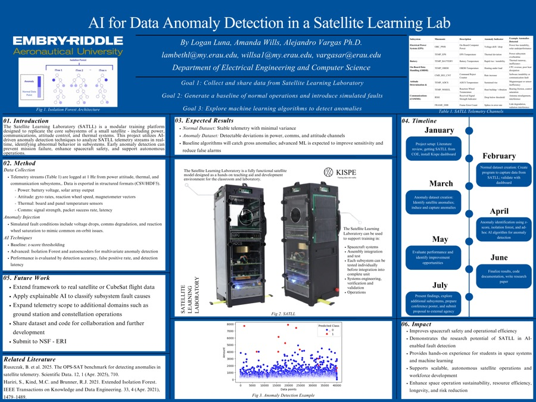
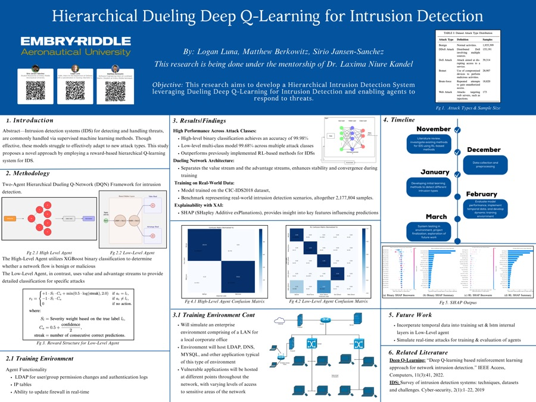
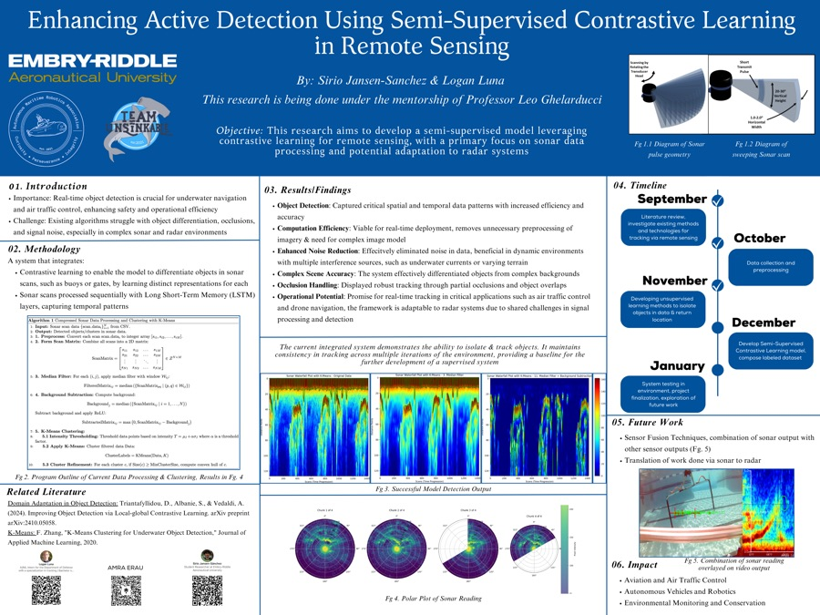
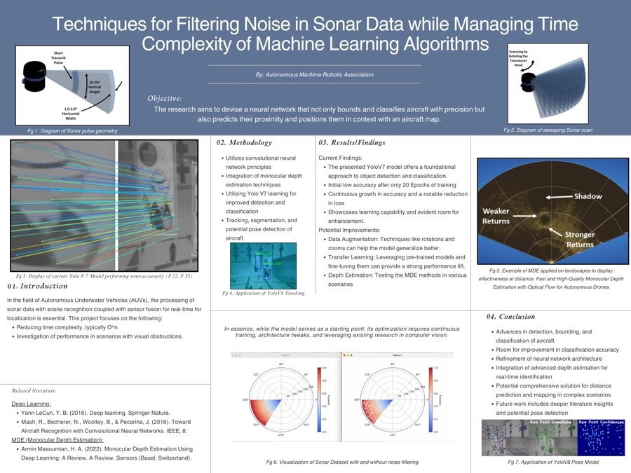

Research Posters
Below is a selected collection of research posters from 2022–2026, representing
my work across reinforcement learning, optimization, sonar processing, remote sensing,
sim-to-real robotics, and aviation NLP.
AERO-Sim2Real: Reinforcement Learning For Sim-to-Real Drone Deployment (2026)
Trains PPO-based flight-control policies in NVIDIA IsaacLab and deploys them on Crazyflie 2.1 nano-quadrotors, quantifying sim-to-real divergence across hover, waypoint-following, and figure-eight trajectory tasks.

Learning Causal Structures from Aviation Accident Narratives (2025)
Compares rule-based NLP, transformer (DistilBERT), and few-shot LLM (Mistral-7B) approaches for extracting causal relationships from NTSB aviation accident narratives.

Satellite Proposal Poster (2025)
Proposes a development framework for satellite anomaly detection, with its motivation, mission impact, and design plan.

Satellite Trajectory Research Poster (2024)
Full research results for PPO-based orbital collision avoidance, including stabilized low-fuel orbits and debris-avoidance maneuvers.

Hierarchical Dueling Q-Learning for Intrusion Detection (2024)
A two-agent Q-learning and Dueling DQN system for classifying and responding to cyberattacks, with near-perfect binary and multi-class accuracy on large intrusion datasets.

Sonar Contrastive Learning Research (2024)
A semi-supervised contrastive learning model for sonar-based object detection, with noise reduction strategies and adaptation potential for radar systems.

Autonomous Maritime Robotics Association Poster (2023)
Early work on underwater sonar-based detection, noise filtering strategies, and object tracking; the foundation of later remote-sensing and sonar research.

Aircraft Detection & Kalman Tracking Poster (2023)
Combines YOLO object detection with ORB keypoints and Kalman filtering for aircraft motion prediction. Presented at NCUR 2023; 1st Place at the Embry-Riddle Student Research Symposium.

 Logan Luna
Logan Luna